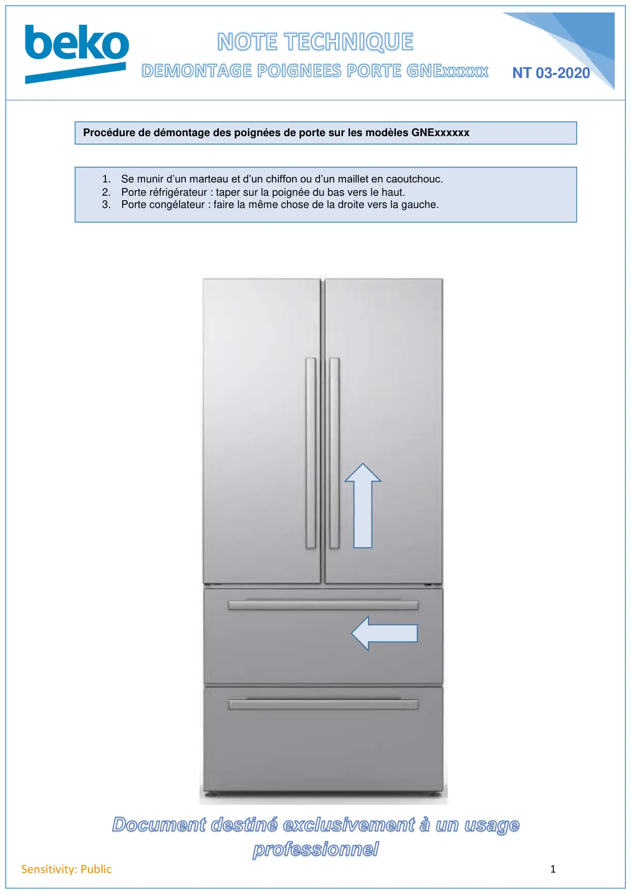

Démontage poignées froid GNExxxxx

1Sensitivity: PublicNT 03-2020Procédure de démontage des poignées de porte sur les modèles GNExxxxxx1. Se munir d’un marteau et d’un chiffon ou d’un maillet en caoutchouc.2. Porte réfrigérateur : taper sur la poignée du bas vers le haut.3. Porte congélateur : faire la même chose de la droite vers la gauche.
1 / 1